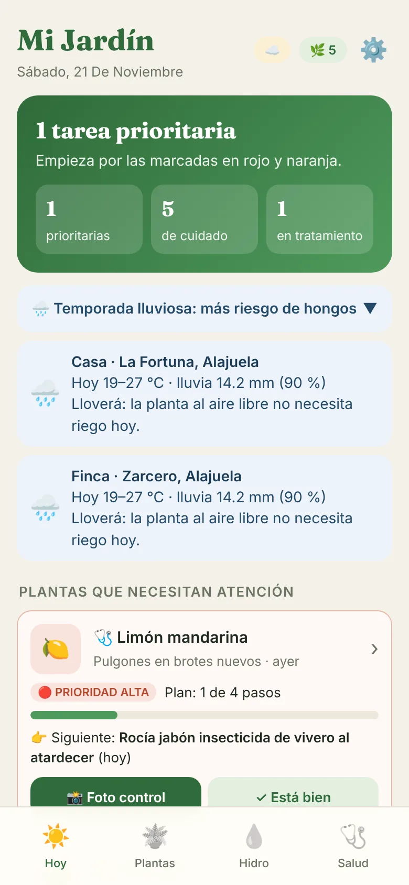
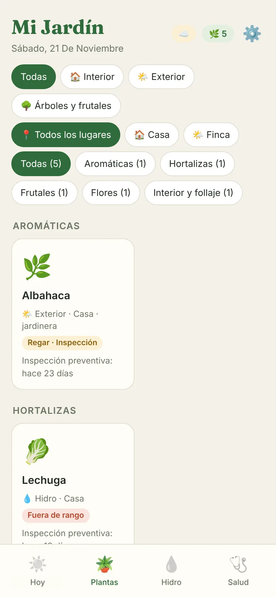
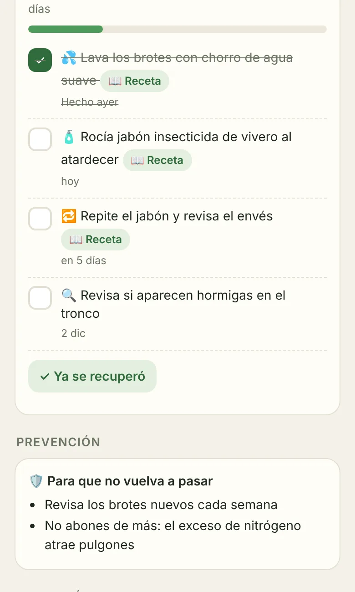
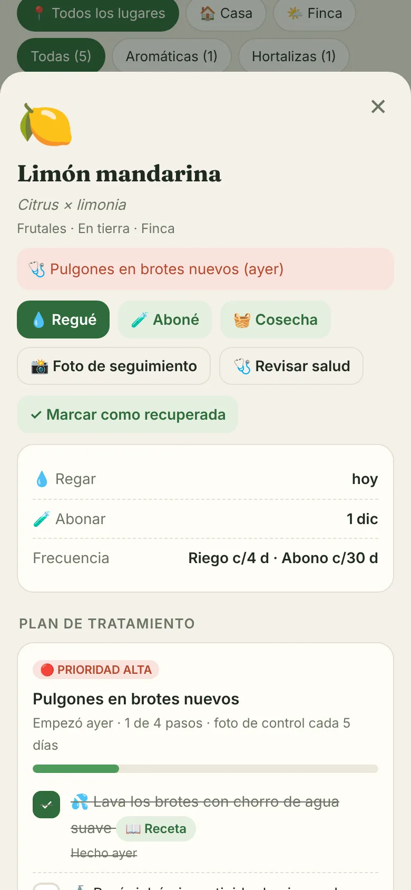
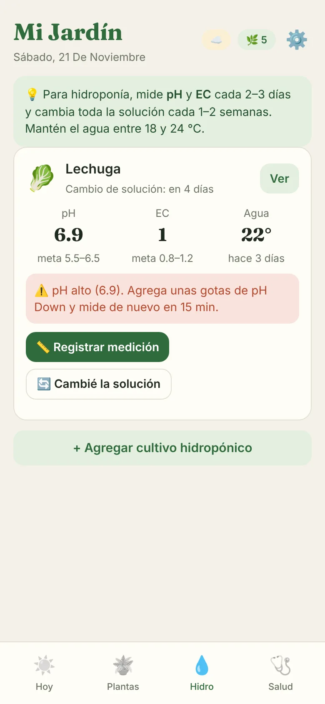

Mi Jardín
Mi JardínTus plantas, cuidadas a tiempo.
Mi Jardín te recuerda cuándo regar y abonar, reconoce tus plantas con una foto y te dice qué hacer si se enferman. Gratis y para toda la familia.

Una foto y ya sabe cuál es
Tómale una foto a tu planta: la app la reconoce y la agrega con su nombre, su categoría y una ficha de cuidados para el clima de Costa Rica.
- Si ya tienes una igual, te pregunta cuál de las dos es.
- Ordena tus plantas por lugar, interior, exterior o tipo.
- Árboles y frutales con su época de flor y cosecha.

Si se enferma, un plan día por día
Cuenta qué ves o sube una foto: recibes un diagnóstico y un plan con prioridad. Cada paso aparece el día que toca y lo marcas al terminar.
- Foto de control para ver si mejoró o empeoró.
- Consejos para que no vuelva a pasar.
- Solo remedios que los especialistas confirman que funcionan.

La familia cuida junta
Invita a quien te ayuda con las plantas usando su correo. Todos ven el mismo jardín, desde cualquier teléfono, y nada se pierde si cambias de celular.
- Cada planta puede tener su responsable.
- El historial dice quién regó, abonó o cosechó.
- Nadie riega dos veces ni se olvida de hacerlo.

Hidroponía bajo control
Anota el pH, la conductividad (EC) y la temperatura del agua. La app te avisa cuando algo se sale del rango y cómo corregirlo, y te recuerda cuándo cambiar la solución.

Sabe si va a llover donde están tus plantas
Guarda tus lugares con su ubicación: la casa, la finca, la oficina. Cada mañana revisa el pronóstico de cada zona y te dice si puedes saltarte el riego de las plantas de afuera.
Lloverá: las 3 plantas de afuera no necesitan riego hoy.
Mucho calor: revisa la tierra en la tarde.
Remedios caseros que sí funcionan
Internet está lleno de trucos que no sirven o que dañan la planta. El recetario de Mi Jardín solo incluye lo que confirman los servicios de extensión agrícola de universidades, con cantidades y cuidados.
✓Funcionan
- Chorro de aguaÁcaros y pulgones
- Jabón insecticida de viveroInsectos de cuerpo blando
- Bicarbonato con aceiteOídio, al primer síntoma
- Poda con tijera desinfectadaHojas con hongos
~A medias
- Leche diluidaSolo para prevenir el oídio
- Canela en esquejesEfecto pequeño
✕Mitos
VinagreQuema la plantaJabón de lavar platosDaña hojas y tierraBorra de café directaNo acidifica y compactaSalSe queda en la tierra
Fuentes: University of Florida IFAS, UC Master Gardeners, Colorado State University Extension, NC State Extension y Wisconsin Horticulture.
Lo que en otras apps se paga
| Mi Jardín | Apps comunes | |
|---|---|---|
| Identificar con foto | Gratis | Casi siempre con suscripción |
| Diagnóstico y plan de tratamiento | Gratis | Casi siempre con suscripción |
| Compartir con la familia | Gratis | Versión de pago o no existe |
| Riego que se ajusta a la lluvia | Sí, por zona | Calendario fijo |
| Remedios con fuente | Sí | Pocas veces |
Comparación general según reseñas públicas de apps de cuidado de plantas; cada app tiene sus propias condiciones.
Lista en dos minutos, sin tienda de apps
- Abre la app
En el iPhone usa Safari; en Android, Chrome. Entra a la dirección de Mi Jardín.
- Agrégala al inicio
iPhone: botón Compartir y «Agregar a pantalla de inicio». Android: menú ⋮ e «Instalar app».
- Entra con tu correo
Te llega un código. Desde ahí tu jardín queda guardado en la nube y puedes invitar a tu familia.
Preguntas frecuentes
¿Cuesta algo?
No. La identificación y los diagnósticos usan el nivel gratuito de Google Gemini. Si mucha gente la usa al mismo tiempo, puede tardar unos segundos más o pedirte que intentes un rato después.
¿Dónde quedan mis datos y mis fotos?
En tu teléfono y en tu cuenta. Solo los ven las personas que invites a tu jardín. Puedes descargar un respaldo completo cuando quieras desde Ajustes.
¿Funciona sin internet?
Sí: tus tareas, el historial, el recetario y la guía de síntomas funcionan sin señal. La identificación con foto, el diagnóstico con IA y el clima necesitan internet, y todo se sincroniza al volver la señal.
¿Sirve para árboles, frutales e hidroponía?
Sí. Puedes registrar cosechas, ver la época de flor y fruto, y llevar el pH y la conductividad de tus cultivos hidropónicos.
¿Cómo invito a mi familia?
En Ajustes escribe su correo y toca Invitar. Esa persona instala la app, entra con ese mismo correo y ve tu jardín.